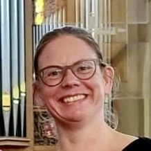

OVER MARSJA MUDDE
-
Middeleeuwen- en renaissancespecialist en sopraan Marsja Mudde (Ridderkerk, 1976) was van jongs af aan al gefascineerd door steeds oudere klassieke vocale muziek. Vanaf het begin van haar zangstudie aan het Fontys Conservatorium in Tilburg specialiseerde zij zich in de middeleeuwen en renaissance bij dr. Rebecca Stewart, hoofd van de afdeling Oude Vocale Ensemble Muziek. Na haar buitengewoon succesvolle eindexamenconcert over Sint Michael en Alle Engelen volgde zij nog vele specialisatiecursussen op masterniveau. Zo verdiepte zij zich in onder anderen het Parijse Notre Dame repertoire, Hildegard von Bingen, Moderne Devotie en gregoriaanse muziek uit alle Europese gebieden.
Mijn naam is Marsja Mudde, zangeres en zangpedagoge
Het zingen van ensemblemuziek en solorepertoire uit de Middeleeuwen, Renaissance en de vroege Barok zie ik als mijn roeping. Om deze muziek mooi uit te voeren heb je stijlspecifieke vocale technieken nodig en moet je op een bepaalde manier ’luisterend zingen’. Veel van deze muziek is niet in moderne notatie beschikbaar en moet dus uit de originele handschriften of vroege drukken worden gelezen, of vakkundig worden getranscribeerd. De uitvoering vanuit de originele notatie heeft mijns inziens ook duidelijk meerwaarde boven het uitvoeren van een transcriptie, omdat de zanger min of meer gedwongen wordt om te luisteren naar wat de anderen doen en omdat de vloeiendheid van de eigen partij met de oude neumen of ligaturen veel meer tot zijn recht komt. Dit ambachtelijke werken vind ik zo leuk, dat ik er ook erg van geniet om het aan anderen door te geven. Dit doe ik in de zanglessen en cursussen die ik geef, maar ook in de blog die ik schrijf en in het boek dat ik heb uitgegeven.
In mijn werk als zangeres en docente van Oude Muziek beleef ik een diep contact met mijn omgeving. Hiermee bedoel ik niet alleen het voor de hand liggende contact met mijn publiek, maar ook de verbinding tussen mijzelf en de andere ensembleleden. Bovendien vraagt deze muziek erom dat je de beschikbare akoestiek ten volle benut. Daarnaast leg je bij het uitvoeren van deze muziek bijna onvermijdelijk ook een lijntje naar het universum, met dat wat groter is dan wij, of - als u zich daarin kunt vinden - met God. In het werk met mijn ensembles of als soliste hoop ik dat dit contact voor het publiek voelbaar is.
Oude Muziek is vaak religieus of heeft tenminste zijn oorsprong in een cultuur met een diep spiritueel of religieus bewustzijn. Ik geloof dat dit de ‘magie’ van deze muziek is en dat mijn prestaties afhangen van mijn begrip van deze cultuurhistorische achtergronden. Daarnaast is het belangrijk om de taal of het dialect en de opbouw van de muziekcompositie te begrijpen en te analyseren. Zo kom ik tot een zo oorspronkelijk mogelijke interpretatie. Daarom worden deze achtergronden ook altijd meegegeven aan de luisteraars van concerten en voordrachten en van de CD’s en ander audiovisueel materiaal, in de vorm van uitgebreide programmatoelichtingen en interviews.